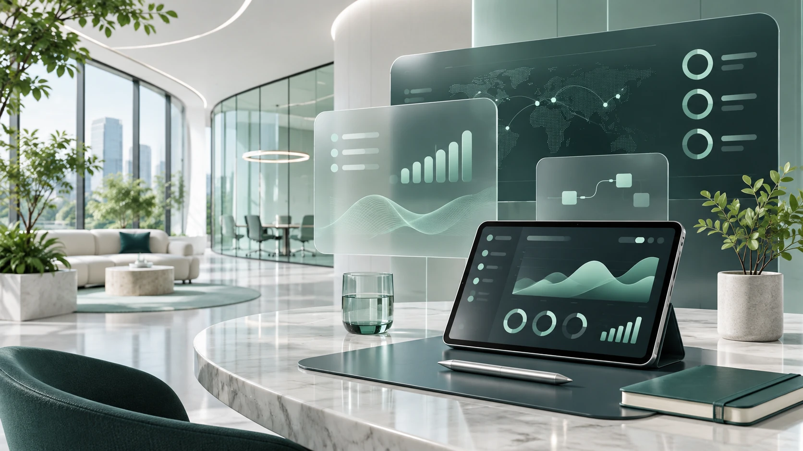

Web experiences
Responsive interfaces and content-led websites.
DESIGN · DEVELOPMENT · DATA
Thoughtful digital experiences built around people, products and business workflows.
Explore our approach
DESIGN / DEVELOPMENT / DATASOLUTIONS
Three connected disciplines, structured around the outcomes that matter.
Responsive interfaces and content-led websites.
Applications that make recurring tasks more straightforward.
Clear reporting and understandable information design.
OUR PROCESS